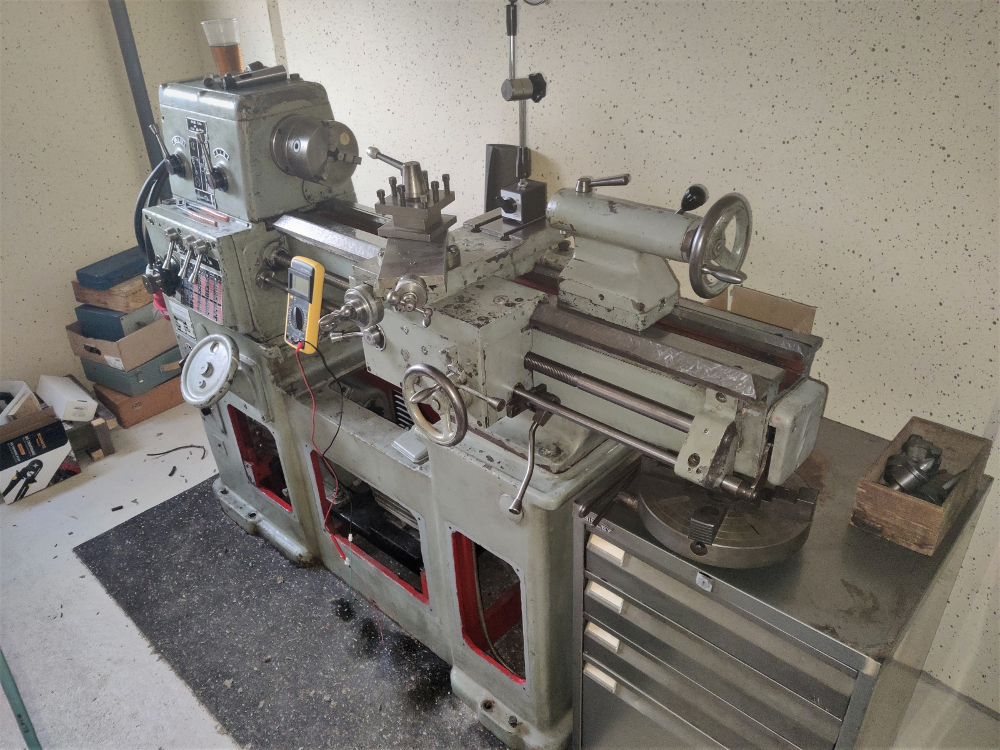
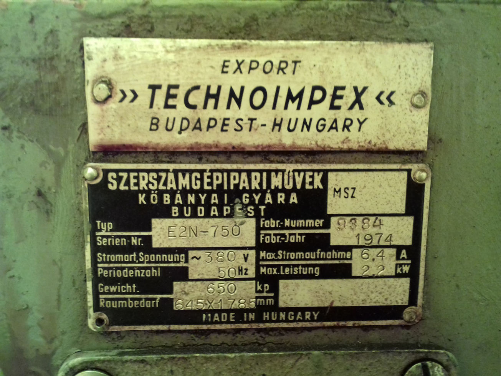
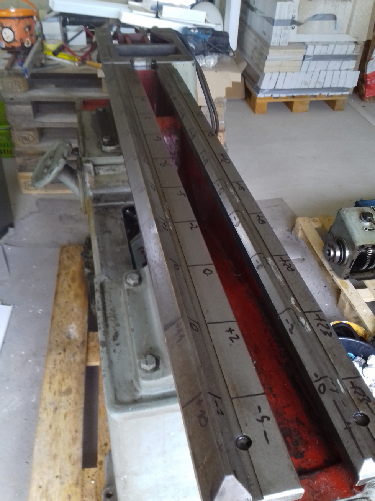
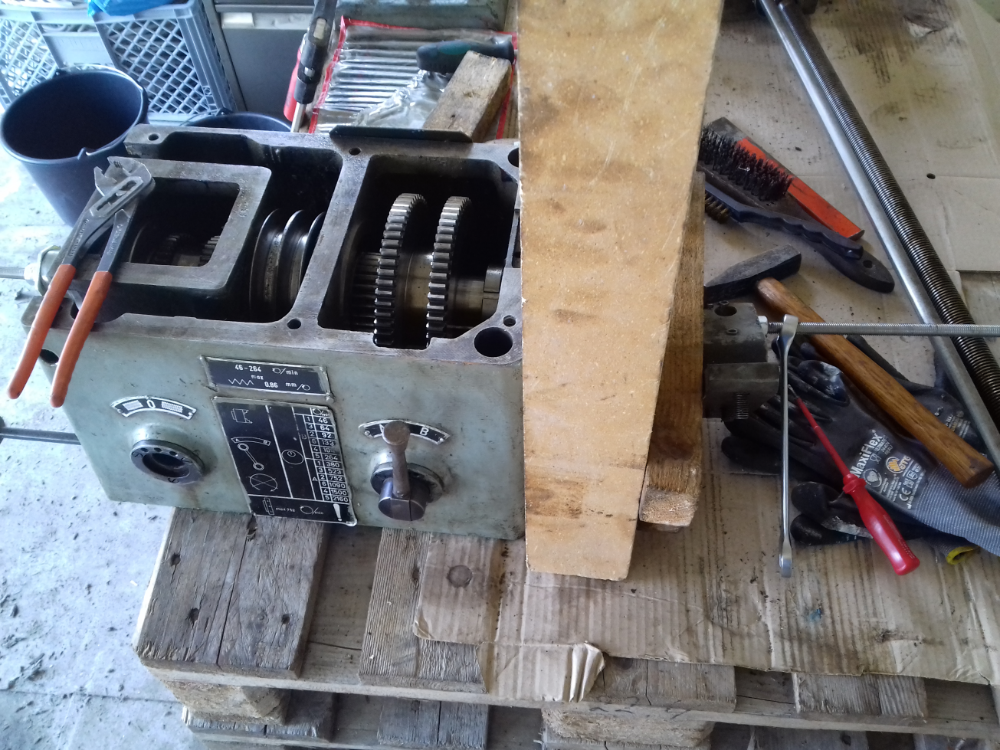
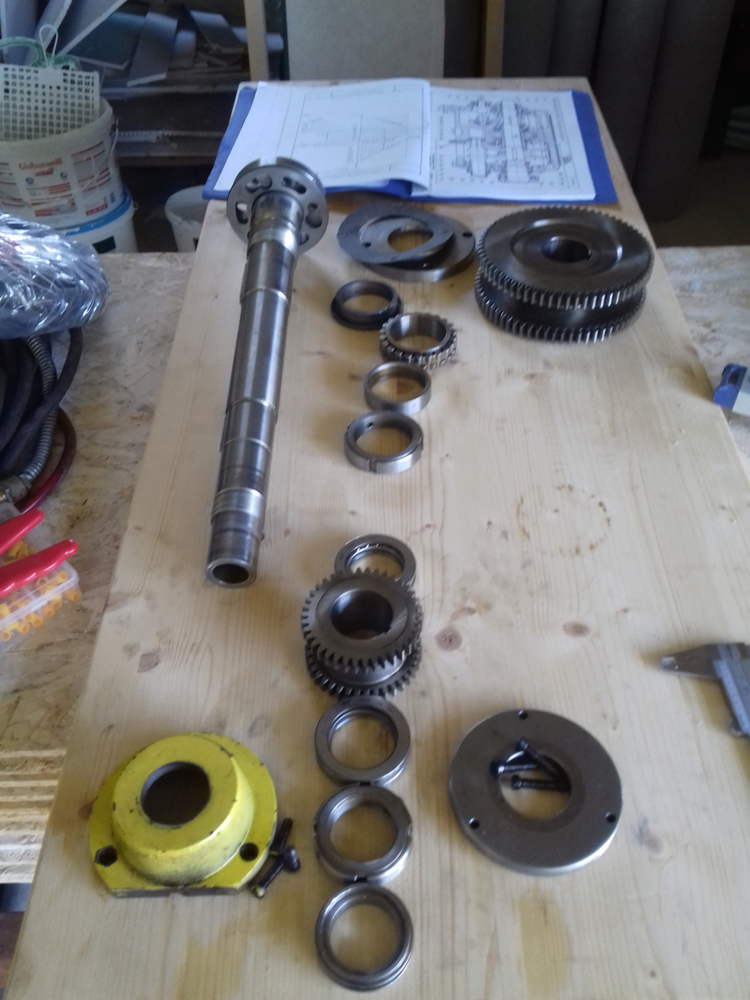
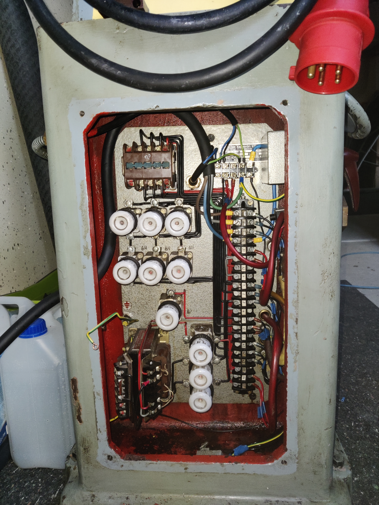

My Kart E2N-750 lathe
TOC markerThe story behind
This is my little toolroom lathe. It's a Hungarian E2N-750 from 1974.
 {kind=link}
{kind=link}
I bought this lathe back in June 2021 as a replacement for the chinese mini-lathe I used at home before. I had a Weiler LZ for a while and later sold that, because it did not really suit my needs. Originally I was looking at East German DLZ-type lathes, but happened to stumble upon this machine.
TOC markerThe repair
So I took the opportunity and bought this lathe used non-running for a fair price and set out to get it running again. I knew the error was likely electric, so I procrastinated and started work on the mechanical parts instead. I did some research and eventually got my hands on an owners manual (contact me for more information) and some drawings. Using these, I decided to fully teardown the machine. Thus I could not only clean it, but also stop the many leaks this machine had. During the teardown I found out the machine bed had about a quarter millimeter run-in and an axial bearing in the headstock was shot.
 {kind=link}
{kind=link}
So I had to rescrape the bed and pull the spindle. This is quite an ordeal with any lathe really and took some time. A few months later in Octobre, I finally started work on the electric system. It is quite sophisticated for a 1974 lathe. The wiring in the cabinet is simply a work of art. The lathe utilises ceramic fuses and basically only relays to control the current, which makes the electrical system really robust. The error was in a broken lockout/safety switch, so I got the electrical system rewired in no time. In the end, fixing the electrical system was the easiest part of this whole restoration.
  TOC marker{kind=link}
{kind=link}
Features
I am really pleased with this lathe because of certain features: It has a 3-phase motor delivering plenty of torque at 50Hz. With modern CNC machines, a lathe usually has a overkill motor (a lathe this size would probably have a 10kW motor in it) and a VFD, creating a variable torque curve across frequencies. This lathe however is geared and thus (if set correctly) never stalls the motor. If one would try to take for example a DOC of 5cm, the lathe would probably break the tool with it being all cast steel and built like a tank.
The gearbox allows for 12 speeds from 46 to 2160 RPM. Thus it can also easily run Carbide tooling on small parts to get the necessary surface speeds. The main advantage of this lathe compared to other lathes of the era is in my opinion the build quality along with its versatility. The next project up would be a new paint job and a big 6-jaw chuck for this lathe.